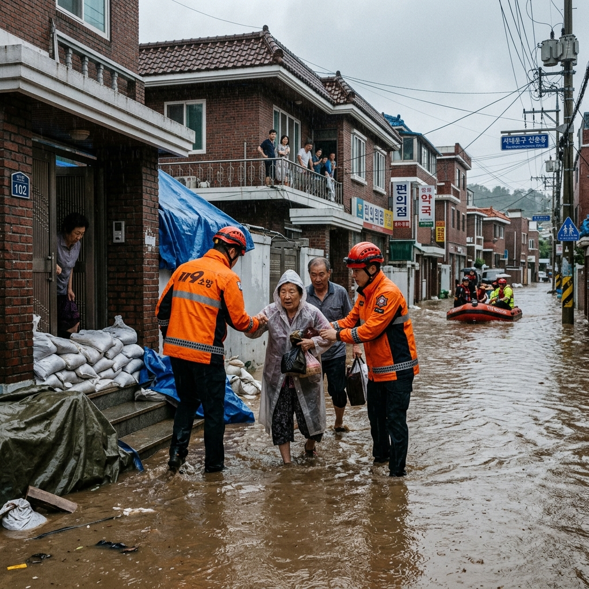
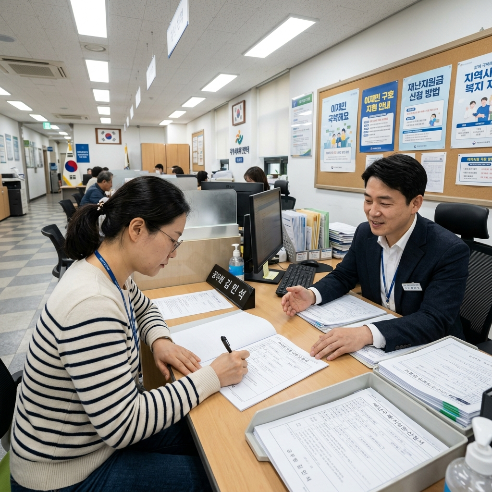
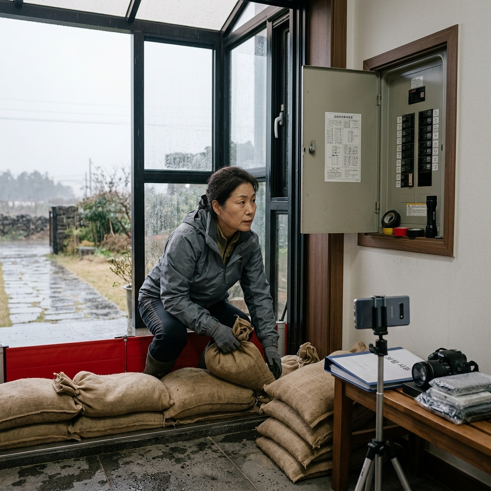

집 침수됐을 때 받을 수 있는 재난지원금과 풍수해보험, 장마철 신청 절차 정리
몇 해 전 장마 때 반지하 거주하는 지인이 큰 피해를 봤습니다. 밤 사이 계곡물이 차오르면서 가구와 가전이 대부분 침수됐는데, 정작 지원을 받을 수 있는지조차 몰라서 주민센터를 몇 군데 돌아다니며 직접 물어봐야 했습니다. 그 과정을 옆에서 지켜보면서 '미리 알고 있었다면 훨씬 빨리 도움을 받았을 텐데'라는 생각을 많이 했습니다.
이 글에서는 수해·침수 피해 발생 시 신청 가능한 재난지원금 체계와 풍수해보험 가입 방법을 정리합니다. 구체적인 지급 금액은 재해 등급·지자체 판단에 따라 다르므로 이 글은 신청 흐름과 경로 안내 목적으로 작성했습니다.

장마철 침수 피해 현장 / AI 제작 이미지
01 | 재난지원금 종류 — 국가 vs 지자체 구분
수해 피해 지원은 크게 두 체계입니다.
① 국가(재해구호법·재난 및 안전관리 기본법): 행정안전부 주관. 특별재난지역 선포 시 국비 지원 비율이 높아지고 지원 항목이 확대됩니다. 주거·이재민 구호 중심의 지원이 이루어집니다.
② 지자체(시·도·군구): 광역·기초 지자체별 자체 재난지원금을 별도 운영하는 경우가 있습니다. 국가 지원 신청과 별개로 주민센터에서 지자체 자체 지원금 신청 가능 여부를 반드시 확인하세요.
두 지원을 동시에 받을 수 있는 경우가 많습니다. 국가 지원을 받았다고 해서 지자체 추가 지원이 자동으로 배제되지는 않습니다. 해당 주민센터에서 중복 신청 가능 여부를 확인하세요.
02 | 지급 기준 — 어떤 경우에 받을 수 있나
재난지원금 수급 대상은 행정안전부장관 또는 지자체장이 재난으로 선포한 사건으로 인해 피해를 입은 주민입니다. 단순 폭우로 가구가 젖은 수준이 아닌, 피해 조사반(지자체 공무원)이 현장 확인 후 피해 규모를 인정해야 지원이 이루어집니다.
주거 피해 유형별:
• 전파(全破): 주택이 완전히 파괴되거나 생활 불가능한 경우
• 반파(半破): 주요 구조부가 절반 이상 파괴된 경우
• 침수: 주거 공간이 침수된 경우 (반지하, 1층 등)
실제 지원 금액과 항목은 행정안전부 재해구호 계획 및 지자체 자체 기준에 따라 결정됩니다. 피해 신고를 했더라도 조사 결과에 따라 지원 여부와 금액이 다를 수 있습니다.
✍️ 직접 신청 화면 따라가보니
복지로(www.bokjiro.go.kr) → '재난피해지원' 검색 → 재해구호지원 신청 경로를 직접 따라가봤습니다. 피해 발생 신고는 주민등록상 주소지 주민센터 방문이 1차 경로입니다. 온라인 신청은 복지로에서 일부 지원 유형만 가능하고, 현장 실사를 거쳐야 하는 지원금은 주민센터 방문이 필수입니다. 피해 사실 확인서를 미리 출력해 두면 방문 시 시간을 절약할 수 있습니다.
03 | 재난지원금 신청 절차
Step 1. 피해 신고 (가장 빠르게)
침수 발생 즉시 관할 주민센터(읍·면·동) 또는 지자체 재난상황실에 피해 신고합니다. 재난안전포털(www.safekorea.go.kr) 앱에서도 신고 가능합니다.
Step 2. 피해 조사
지자체 피해 조사반이 현장을 방문해 피해 규모를 확인합니다. 이 때 피해 현장 사진·영상 확보가 중요합니다. 정리하기 전에 먼저 기록하세요.
Step 3. 지원금 지급
피해 조사 결과를 바탕으로 지자체·행정안전부 기준에 따라 지원금이 산정되어 지급됩니다. 지급 경로는 현금 또는 바우처 형태일 수 있습니다.
Step 4. 추가 지원 확인
생계·의료·주거 관련 추가 지원(긴급복지지원 등)은 복지로(www.bokjiro.go.kr)에서 통합 조회할 수 있습니다.

풍수해보험 가입 및 보험금 청구 흐름 / AI 제작 이미지
04 | 풍수해보험이란 — 민영보험과 다른 점
풍수해보험은 행정안전부가 주관하는 정책보험으로, 일반 민영 화재보험이 보장하지 않는 태풍·홍수·호우·강풍·풍랑·해일·대설·지진 피해를 보장합니다.
가장 큰 특징은 국고 보조입니다. 저소득층 가구는 보험료의 최대 92%까지 국고로 지원되어 월 몇 천 원 수준으로 가입할 수 있습니다. 일반 가구도 지자체별 지원율에 따라 보험료의 일부를 보조받습니다.
가입 대상: 주택(단독·아파트·연립), 온실·창고 등 농어업인 시설, 소상공인 상가. 일반 민영 화재보험 가입자도 중복 가입이 가능합니다.
05 | 풍수해보험 가입 방법과 보험료
취급 보험사: 삼성화재, DB손해보험, 현대해상, KB손해보험, NH농협손해보험 등. 지자체 주민센터를 통해서도 안내받을 수 있습니다.
가입 경로:
① 주민센터 방문 신청 (담당 공무원이 연결해 줌)
② 취급 보험사 직접 방문 또는 전화
③ 취급 보험사 모바일 앱·홈페이지
보험료는 주택 유형, 소재지(침수 위험 등급), 보장 금액에 따라 달라집니다. 정확한 보험료는 가입 시 해당 보험사를 통해 확인하세요. 장마 전 4~6월 사이에 가입하는 것이 이상적입니다. 피해 발생 후에는 가입해도 해당 사고에는 소급 적용이 되지 않습니다.
06 | 침수 발생 즉시 대처 순서
① 전기 차단기 내리기: 침수 징후 발생 시 전기가 물과 접촉하면 감전 위험. 즉시 차단기를 내리세요.
② 대피 우선: 인명이 최우선. 귀중품·서류보다 사람이 먼저 대피합니다.
③ 사진·영상 기록: 대피 후 안전한 상황에서 피해 현장 기록(보험·지원금 청구에 필수)
④ 신고: 재난신고 119 또는 주민센터·재난안전포털 앱
⑤ 이재민 임시 주거 요청: 주거 불가능한 경우 지자체 이재민 임시 주거 지원 신청
절대 금물: 침수 중 전기·가스 사용, 혼자 배수 작업, 지하 주차장 차량 이동(침수 시 수압으로 문 열리지 않아 익사 위험)

침수 피해 복구 지원 안내 / AI 제작 이미지
07 | 풍수해보험 보험금 청구 방법
① 피해 사진·영상 확보
② 가입 보험사에 즉시 연락 (콜센터 또는 앱)
③ 보험사 손해사정사 현장 방문 확인
④ 필요 서류 제출: 피해사실확인서(주민센터 발급), 사진·영상 자료, 견적서(수리비)
⑤ 보험금 지급 (통상 손해 확정 후 3~10 영업일 이내)
피해 현장 복구 전에 반드시 사진을 찍어두세요. 복구 후에는 피해 규모 산정이 어려워져 보험금이 줄어들 수 있습니다. 보험사 손해사정사가 방문하기 전까지 불필요한 훼손은 피하세요.
08 | 장마 전 사전 대비 체크리스트
• 풍수해보험 미가입이라면 장마 전 가입 확인
• 반지하·저층 거주자: 역류 방지 밸브 설치 여부 확인 (지자체 지원 사업 운영 여부 문의)
• 배수구·하수구 점검 및 청소
• 비상 연락망 확보: 주민센터 재난 담당 전화, 119, 이웃 연락처
• 비상 가방 준비: 신분증·통장·보험증권 사본, 비상식량, 충전된 보조배터리
• 중요 서류·귀중품은 침수되지 않는 높은 곳에 보관
풍수해보험을 장마 시작 후에 가입하면 해당 장마 피해에는 적용이 안 될 가능성이 큽니다. 장마 예보가 나오기 전, 봄~초여름 사이 가입을 마치는 것이 중요합니다.
09 | 주요 관련 기관 연락처
• 행정안전부: www.mois.go.kr / 재난신고 119
• 재난안전포털: www.safekorea.go.kr
• 복지로: www.bokjiro.go.kr (재난피해지원 통합 조회)
• 한국소비자원: 1372.go.kr
• 주민센터 재난 담당: 주소지 관할 주민센터 행정복지팀
피해가 발생했다면 빠른 신고와 기록이 핵심입니다. 지원금 신청 가능 여부는 주민센터 방문이나 복지로 홈페이지를 통해 직접 확인하세요.
📝 작성자 메모
이 글은 재난지원금 신청 흐름을 안내하기 위해 작성됐습니다. 구체적인 지원 금액·조건은 피해 규모, 지자체 판단, 당해 연도 재해구호 계획에 따라 달라집니다. 정보 기준일: 2026-06-29. 실제 지원 가능 여부와 금액은 반드시 주민센터 또는 행정안전부(www.mois.go.kr)에서 확인하세요. 이 글의 수치는 결과를 보장하지 않습니다.
#침수피해재난지원금
#수해지원금신청
#풍수해보험가입
#장마철대비
#이재민지원
#행정안전부재난
#재해구호지원
#침수대처법
#반지하침수
#자연재해보험